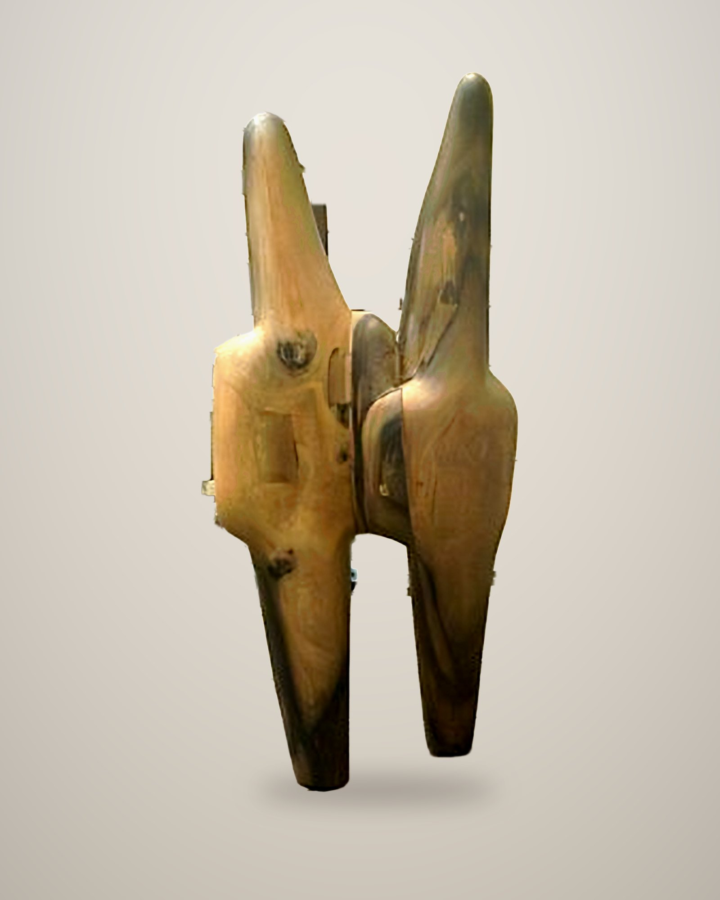

Sfondo rimosso, nitidezza e colore migliorati con strumenti di IA. Nessuna parte dell'opera è stata generata.Background removed, sharpness and colour improved with AI tools. No part of the work was generated.
← Tutte le opereAll works
UR 036
Gruppo di famigliaGruppo di famiglia
legno di ulivo, 1970olive wood, 1970
- CatalogoCatalogue
- UR 036
- AnnoYear
- 1970
- TecnicaMedium
- legno di ulivoolive wood
- TipoType
- sculturasculpture
- DimensioniDimensions
- da completareto be completed
- CollocazioneLocation
- da completareto be completed
- VisteViews
- 2